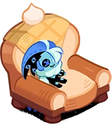
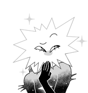

Место учебы
Фундаментальная и прикладная лингвистика, НИУ ВШЭ, Москва
Pure Vanilla fan extraordinaire!!!


Фундаментальная и прикладная лингвистика, НИУ ВШЭ, Москва
Красноярск
Школа №1249
Cookie Run: Kingdom
OFF by Mortis Ghost
In Stars and Time
of the Devil
World of Warcraft/Warcraft III
OneShot
всегда рада попробовать новые и обсудить старые
Люблю рисовать в свое удовольствие
Шоколад #1
Коллекционирую плюшевые игрушки, фонари, зажигалки и другое барахло
Интересуюсь оккультным и сверхъестественным